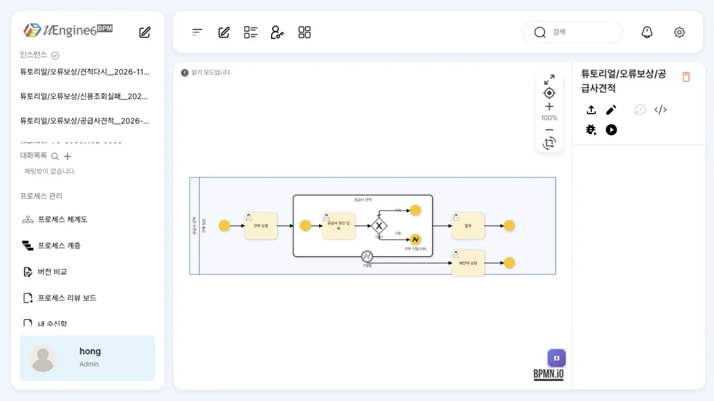
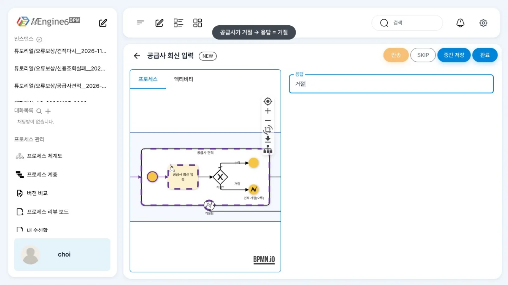
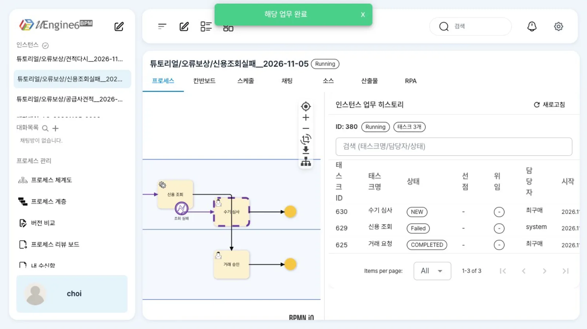
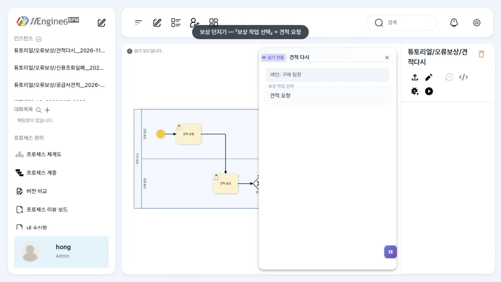
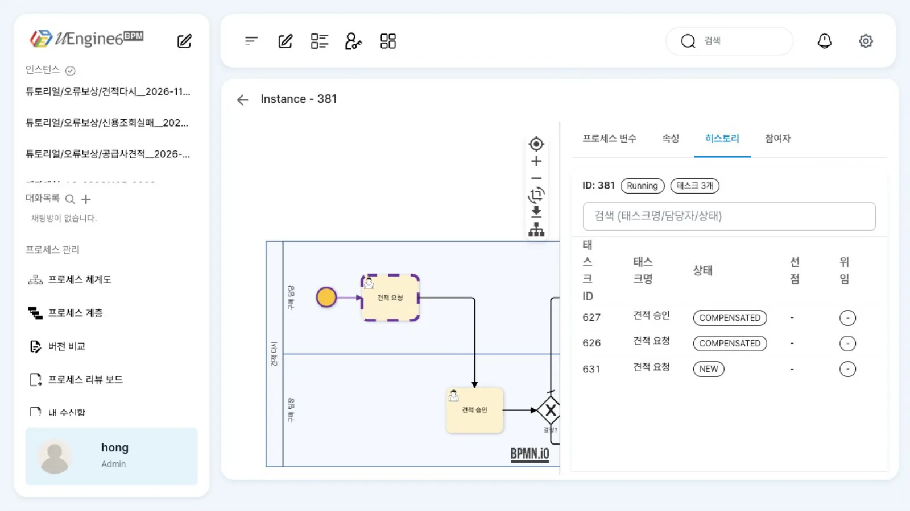

일이 틀어졌을 때의 경로도 프로세스에 그려 둡니다. 서브프로세스 안의 오류 종료를 경계에서 받아 「재견적 요청」으로 보냅니다. 외부 API 호출에 실패한 서비스 작업은 「수기 심사」 업무로 돌립니다. 보상 던지기로 앞 단계부터 다시 하게 합니다.
무엇을 · 왜#
정상 경로만 그린 프로세스는 실패하면 멈춥니다. 공급사가 견적을 거절하거나, 신용 조회 API가 내려가 있거나, 결재자가 「처음부터 다시」를 고르는 일은 예외가 아니라 업무의 한 갈래입니다. BPMN은 이런 갈래를 오류 이벤트와 보상 이벤트로 표현합니다.
| BPMN | 뜻 | uEngine6에서 |
|---|---|---|
| 오류 종료 이벤트(Error End) | 이 범위(서브프로세스)를 오류로 끝냅니다 | <bpmn:endEvent> + <bpmn:errorEventDefinition/>. 설정 없음 |
| 오류 경계 이벤트(Error Boundary) | 붙은 활동이 오류로 끝나면 그 활동을 멈추고 경계 뒤로 갑니다 | 서브프로세스(안의 오류 종료) 또는 서비스 작업(호출 실패)에 붙입니다. 오류 코드 구분은 없습니다 |
| 보상 던지기(Compensation Throw) | 끝난 일을 되돌리는 처리기를 호출합니다 | 지정한 작업으로 되돌리기(backToHere). 그 사이 작업은 COMPENSATED, 지정 작업이 새로 생깁니다. BPMN 보상 처리기(compensation handler)는 아닙니다 |
따라 하기#
- 오류 종료와 오류 경계.
튜토리얼/오류보상/공급사견적을 엽니다. 서브프로세스 「공급사 견적」 안에서 「공급사 회신 입력」 뒤 게이트웨이가공급사응답 == 거절이면 오류 종료 「견적 거절(오류)」로 갑니다. 서브프로세스 테두리의 오류 경계 「거절됨」이 이 오류를 받아 「재견적 요청」으로 보냅니다.
튜토리얼/오류보상/공급사견적 — 서브프로세스 안 오류 종료와 테두리의 오류 경계 - 거절해 보기. 최구매의 업무 목록에서 「공급사 회신 입력」을 열고 「응답」에
거절을 넣어 완료합니다. 업무 목록에 「재견적 요청」이 옵니다.
「공급사 회신 입력」 — 응답 = 거절 - 서비스 작업의 오류 경계.
튜토리얼/오류보상/신용조회실패를 엽니다. 서비스 작업 「신용 조회」(모의 APIGET /credit, 21장)에 오류 경계 「조회 실패」가 붙어 「수기 심사」로 갑니다. 모의 API를POST /admin/fail?on=1로 503을 돌려주게 해 둡니다. - API가 실패하면. 최구매가 「거래 요청」을 완료합니다. API는 503을 돌려주지만 완료는 거절되지 않습니다. 완료 뒤 열리는 인스턴스 화면의 「인스턴스 업무 히스토리」에 「신용 조회」가
Failed(담당자system)로 남고, 업무 목록에 「수기 심사」가 옵니다. 오류 경계가 없었다면 완료 요청 자체가 HTTP 500으로 거절되고 인스턴스가 「거래 요청」에 머물렀을 것입니다.
인스턴스 업무 히스토리 — 「신용 조회」 Failed(system), 「수기 심사」 NEW - 보상 던지기.
튜토리얼/오류보상/견적다시에서 「견적 승인」 뒤 게이트웨이가결정 == 재견적이면 보상 던지기 이벤트 「견적 다시」로 갑니다. 패널의 「보상 작업 선택」이견적 요청입니다.
보상 던지기 패널 — 「보상 작업 선택」 - 되돌려 보기. 윤팀장이 「견적 승인」에서 「결정」에
재견적을 넣어 완료하면, 최구매에게 「견적 요청」이 다시 옵니다. 관리자 화면 「히스토리」에서 앞의 「견적 요청」·「견적 승인」이 보상(COMPENSATED)으로 남은 것을 봅니다.
히스토리 — 견적 승인·견적 요청 COMPENSATED, 새 견적 요청 NEW
설정 레퍼런스#
오류 종료와 오류 경계#
<bpmn:subProcess id="Sp" name="공급사 견적">
…
<bpmn:endEvent id="SpErr" name="견적 거절(오류)"><bpmn:errorEventDefinition id="SpErr_def"/></bpmn:endEvent>
</bpmn:subProcess>
<bpmn:boundaryEvent id="Err" name="거절됨" attachedToRef="Sp"><bpmn:errorEventDefinition id="Err_def"/></bpmn:boundaryEvent>
<!-- 서비스 작업에 붙인 오류 경계 -->
<bpmn:serviceTask id="Credit" name="신용 조회">…</bpmn:serviceTask>
<bpmn:boundaryEvent id="Err" name="조회 실패" attachedToRef="Credit"><bpmn:errorEventDefinition id="Err_def"/></bpmn:boundaryEvent>
오류 이벤트 패널은 자리 표시만 있고 설정 칸(오류 코드·이름)이 없습니다. 어떤 오류든 같은 경계로 갑니다.
서비스 작업이 실패했을 때#
| 오류 경계 없음 | 오류 경계 있음 | |
|---|---|---|
| 앞 작업의 「완료」 | HTTP 500으로 거절, 통째로 되돌림 | 성공 |
| 인스턴스 | 앞 작업에 머뭅니다 | 경계 뒤 작업(「수기 심사」)으로 |
| 남는 흔적 | 없음(로그뿐) | 인스턴스 업무 히스토리(bpm_worklist)에 그 서비스 작업이 Failed·담당자 system, 설명 칸에 오류(예: 503 Service Unavailable: "{"error":"credit bureau down (mock)"}") |
보상 던지기#
<bpmn:intermediateThrowEvent id="Comp" name="견적 다시">
<bpmn:extensionElements><uengine:properties><uengine:json>
{"compensateTask":{"name":"견적 요청","tracingTag":"Quote"}}
</uengine:json></uengine:properties></bpmn:extensionElements>
<bpmn:compensateEventDefinition id="Comp_def"/>
</bpmn:intermediateThrowEvent>
| 패널 | JSON | 동작 |
|---|---|---|
| 보상 작업 선택 | compensateTask.tracingTag(·name) |
이 이벤트에 오면 그 작업으로 backToHere. 그 작업부터 지금까지의 작업은 COMPENSATED, 그 작업이 새로 생깁니다 |
관리자 화면의 「이 위치로 되돌리기」(되돌리기와 실패한 작업 다루기)와 같은 일을 사람이 선택하는 대신 프로세스 흐름에서 실행합니다.
입력 칸 → 변수#
「공급사 회신 입력」의 「응답」과 「견적 승인」의 「결정」은 작업 입력 칸을 변수로 옮겨 게이트웨이가 읽게 했습니다(작업 입력값과 데이터 매핑).
{"_type":"org.uengine.kernel.HumanActivity","eventSynchronization":{"eventType":"",
"attributes":[{"name":"응답","className":"String"}],
"mappingContext":{"mappingElements":[{"argument":{"text":"공급사응답"},"direction":"out","variable":{"name":"[Arguments].응답"}}]}}}
알려진 제약#
임베디드 서브프로세스는 오류 쪽으로만 빠져나옵니다
이 브랜치에서는 임베디드 서브프로세스가 정상으로 끝난 뒤 다음 작업(이 예제의 「발주」)을 완료할 수 없습니다(Illegal completion for workitem). 그래서 이 장에서는 오류 경계로 빠져나오는 경로만 보여 주었습니다. 정상 경로가 필요한 묶음은 콜 액티비티(공통 프로세스 불러 쓰기)로 만드세요.
- 오류 코드·이름으로 경계를 나눌 수 없습니다. 오류 종료·경계 패널에 설정 칸이 없습니다.
- 보상은 BPMN의 보상 처리기·보상 경계가 아니라 「지정 작업으로 되돌리기」입니다. 외부 시스템에 이미 반영한 일(결제, ERP 승인)을 취소하려면 되돌아간 뒤의 흐름에 취소 작업을 직접 넣어야 합니다.
- 서비스 작업에 오류 경계가 없으면 실패가 어디에도 「실패」 상태로 남지 않습니다. 운영에서 실패를 찾아야 하는 호출에는 오류 경계를 붙이세요.
확인 문제#
「공급사 회신 입력」에서 「응답」에 `수락`을 넣으면 무슨 일이 일어나나요?
게이트웨이가 기본 흐름(수락)으로 보내 서브프로세스가 정상으로 끝나고 「발주」가 생깁니다. 그러나 이 브랜치의 결함 때문에 「발주」는 완료할 수 없습니다(위 경고). 정상 경로까지 쓰려면 콜 액티비티로 바꾸세요.
「신용 조회」에 오류 경계를 붙이면 운영자는 실패를 어디서 볼 수 있나요?
업무 목록 표(bpm_worklist)에 「신용 조회」 행이 Failed로 남고, 설명 칸에 HTTP 상태와 응답 본문이 들어갑니다. 업무 쪽에서는 「수기 심사」 작업으로 드러납니다.
보상 던지기와 관리자 화면의 「이 위치로 되돌리기」는 무엇이 다른가요?
하는 일(지정 작업으로 backToHere)은 같습니다. 보상 던지기는 정의에 그려 둔 조건(결정 = 재견적)에 따라 흐름에서 자동으로 실행하고, 「이 위치로 되돌리기」는 관리자가 화면에서 고릅니다.